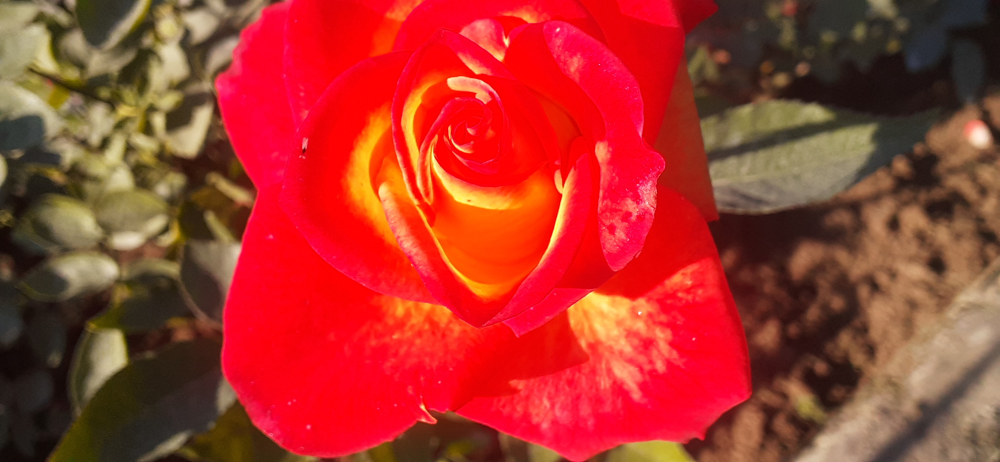

|

|
ORANGE ROSE !!!!!
THIS IS A PICTURE OF ORANGE ROSE .THIS PIC IS CLICKED BY MR.AARYAN SINGH SACHAN.
Orange roses are hybrids developed in the mid-20th century by crossing red and yellow roses.
The resulting flower was extremely popular,
and rose cultivators embraced the new color, creating varieties, such as Rosa Independence, Rosa Tropicana, Rosa Alexander,
Rosa Arocad, and others.
The vibrant orange rose speaks for itself as it represents fascination, enthusiasm, desire, and energy.
Orange roses also symbolize admiration and excitement, making them the perfect gift for your loved one after a big accomplishment.
They offer a message of sincere gratitude and happiness.
When Should You Send Orange Roses?
Send bouquets of vivid and fiery-hued orange roses when you want to express passion and intense desire.
If you find that special someone irresistible, let a bouquet of flame-colored orange roses say it for you.
|